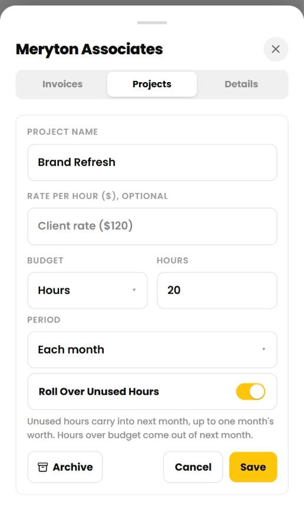
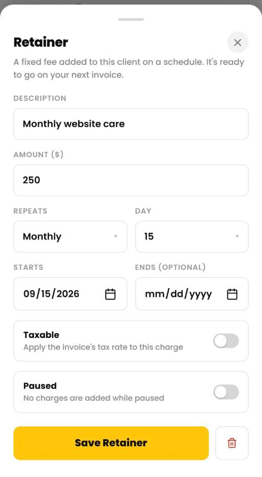
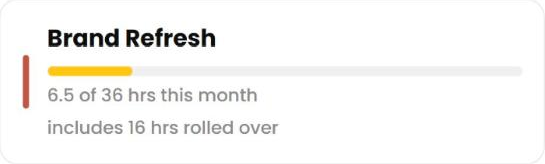

Cruxy / Support / Budgets and retainers
Budgets and retainers
Project budgets and retainers are Pro features. They help you stay on scope and bill recurring work.
Set a project budget
- Tap Clients, then the client, then the Projects tab.
- Tap a project.
- Under Budget, choose Hours or Amount and enter the number.
- Choose the Period: the whole project, each month or each week.
- Tap Save.
A progress bar on the project shows how much is used, for example "26.5 of 40 hrs". Budgets count billable time for the whole workspace.

The 80% heads-up
When logged time takes a project to 80% of its budget, Cruxy shows a heads-up. It shows another when the project goes over. The bar changes color at those points.
Roll over unused budget
For a monthly budget, turn on Roll Over Unused Hours (or Budget). Unused budget carries into the next month, up to one month's worth, and overspending comes out of next month. The balance starts from the first of the current month and restarts if you change the budget.
Weekly budgets follow the week start day set on each device.
Bill a retainer
A retainer is a fixed fee that repeats. Cruxy adds the charge on each date, ready to go on your next invoice.
- Tap a client, then the gear icon for details.
- Tap Add a fixed fee that repeats under Retainer.
- Enter a description and amount, and choose how often it repeats (monthly, weekly, every 2 weeks or quarterly) and on which day.
- Set the start date, and an end date if you want one.
- Tap Save Retainer.
Each client can have one retainer. The row shows the next charge date, or that it's paused or ended. Charges appear in Entries like any fixed fee, and the Invoices tab shows how many are ready to invoice.


Pause or end a retainer
Open the retainer and switch on Paused to stop new charges without losing the setup. Set an end date to stop it on a date, or tap the trash icon to delete it. Charges already created stay.
If your workspace goes back to Free, retainers pause until you upgrade again. Existing budgets stay in place but can't be changed.